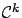

Calculus of Variations and Optimal Control Theory
A Concise Introduction
Daniel Liberzon
University of Illinois at Urbana-Champaign
Index


Next: About this document ...
Up: Calculus of Variations and
Previous: Bibliography
Contents
- 0 -norm
- 1.3.1
| 2.2.1
- abnormal multiplier
- 2.5.1
| 4.1.1
- absolutely continuous function
- 3.3.1
- accessory equation
- see Jacobi equation
- action integral
- 2.4.3
- adjoint system
- 3.4.2
| 4.2.8
- adjoint vector
- 3.4.2
| 4.2.8
| 5.2
| see alsocostate
- admissible perturbation
- 1.3.2
- applications of optimal control
- 1.1
| 1.4
- arclength
- 2.1.1
- asymptotic stability
- 6.2.3
- augmented cost
- 1.2.2.1
| 2.5.1
| 2.5.2
- augmented system
- 4.2.1
- bang-bang control
- 4.4.1
| 4.4.2
- bang-bang principle
- 4.4.2
| 4.4.2
| 4.6
- basic calculus of variations problem
- 2.2
- basic fixed-endpoint control problem
- 4.1.1
- basic variable-endpoint control problem
- 4.1.2
- Bellman
- 5.1
| 5.1.5
- Bernoulli, Johann
- 2.1.3
| 2.1.4
- Bolza problem
- 3.3.2
- boundary conditions
- correct number of
- 2.3.1
| 2.3.5
| 2.5.1
| 3.1.1
| 4.1.2
- brachistochrone
- 2.1.4
| 2.7
- Brouwer's fixed point theorem
- 4.2.6
- canonical coordinates
- 7.1.1
- canonical equations
- 2.4.1
| 3.4.2
| 7.1.3
- as characteristics of HJB equation
- 7.2.2
- canonical variables
- 2.4.1
- Carathéodory
- 5.1.5
- Carathéodory
- 5.4
- catenary
- 2.1.3
| 2.7
| 3.1.1
| 3.1.1
- Cauchy initial value problem
- 7.2.1
- Cauchy-Schwarz inequality
- 2.6.2
- characteristic
- 7.2.1
- characteristic strip
- 7.2.1
- compactness
- 1.2.1.3
| 1.3.3
| 1.3.4
- of reachable sets
- 4.5
| 4.6
- conjugate point
- 2.6.2
- conservation law
- 2.4.3
- conservative force
- 2.4.3
- constrained optimization
- 1.2.2
- constraint
- equality
- 1.2.2
| 4.1.2
| 7.1.1
- holonomic
- 2.5.2.1
- integral
- 2.5.1
- non-integral
- 2.5.2
- nonholonomic
- 2.5.2.1
| 2.7
- contravariance
- 7.1.2
- control set
- 1.1
| 3.3.1
- control system
- 1.1
| 3.3.1
- normal
- 4.4.2
- on a manifold
- 7.1.2
- controllability
- 4.4.2
| 4.6
| 6.2.1
- convexity
- 1.2.1.3
| 1.2.1.3
| 1.3.4
| 1.4
| 4.2.7
| 4.5
| 7.3.3
- coordinate chart
- 7.1.1
- corner point
- 3.1.1
- cost functional
- 1.1
- augmented
- 2.5.1
| 2.5.2
- Bolza form
- 3.3.2
- Lagrange form
- 3.3.2
- Mayer form
- 3.3.2
- costate
- 3.4.2
| see alsoadjoint vector
- as covector
- 7.1.2
- cotangent bundle
- 7.1.1
- cotangent space
- 7.1.1
- cotangent vector
- see covector
- covariance
- 7.1.2
- covector
- 7.1.1
- critical point
- 1.2.1.3
- cycloid
- 2.1.4
- Dido's isoperimetric problem
- 2.1.1
- differentiable manifold
- see manifold
- differential game
- 5.1.5
| 7.3.2
- differential of a function
- 7.1.1
| 7.1.2
- disturbance attenuation
- 7.3.2
- dual space
- 7.1.1
- dynamic programming
- 5.1
- discrete
- 5.1.1
- equality constraint
- 1.2.2
| 4.1.2
| 7.1.1
- Erdmann
- 3.1.1
- Euler
- 2.3.2
- Euler-Lagrange equation
- 2.3.1
- coordinate invariance
- 2.3.3
| 2.7
- for multiple degrees of freedom
- 2.3.3
- integral form
- 2.3.3
- existence and uniqueness of solution
- 3.3.1
- existence of optimal solution
- 2.3.1
| 2.7
| 4.5
| 4.6
- for Mayer problems
- 4.5
- for nonlinear time-optimal problems
- 4.6
- exponential stability
- 6.2.3
- extremal
- 2.3.1
- broken
- 3.1.1
- extremum
- 1.2
| 1.3.1
- strong
- 2.2.1
- weak
- 2.2.1
- feasible direction
- 1.2.1.3
- Fermat's principle
- 2.1.2
- Filippov's theorem
- 4.5
| 4.6
- final state
- 1.1
| 3.3.2
- final time
- 1.1
| 3.3.2
- finite escape time
- 2.6.2
| 6.1.4
- finite-dimensional optimization
- 1.2
- first variation
- 1.3.2
- alternative definition
- 1.3.2
- first-order necessary condition
- 1.2.1.1
| 1.3.2
- for constrained optimality
- 1.2.2.1
| 2.5.1
| 2.5.2
- for weak extremum
- 2.3.1
- fixed-time, free-endpoint problem
- 3.3.3
- Fréchet derivative
- 1.3.2
| 1.4
- free-time, fixed-endpoint problem
- 3.3.3
- Fuller's phenomenon
- 4.4.4
- Fuller's problem
- 4.4.4
| 4.6
- function
-

- 1.3.1
- absolutely continuous
- 3.3.1
- locally Lipschitz
- 3.3.1
- measurable
- 3.3.1
- piecewise

- 2.2.1
- piecewise continuous
- 3.3.1
- functional
- 1.3
- bilinear
- 1.3.3
- linear
- 1.3.2
- quadratic
- 1.3.3
- Gateaux derivative
- 1.3.2
| 1.4
- global minimum
- 1.2
| 1.2.1.3
| 1.3.1
| 1.3.4
- gradient
- 1.2.1.1
- guard
- see switching surface
- Hamilton
- 2.4
| 5.1.5
- Hamilton-Jacobi-Bellman (HJB) equation
- 5.1.3
- and maximum principle
- 5.2
| 7.2
- characteristics of
- 7.2.2
- for infinite-horizon problems
- 5.1.3.1
- in calculus of variations
- 5.1.5
| 5.4
- solving
- 5.4
- Hamiltonian
- 2.3.4
| 2.4.1
| 3.4.1
| 4.1.1
- as energy
- 2.4.3
- classical vs. modern formulation
- 2.4.2
- Hamiltonian matrix
- 6.1.1
- Hamiltonian maximization condition
- 2.4.1
| 2.6.1
| 3.1.2
| 3.4.3
| 4.1.1
| 4.2.9.1
| 5.1.3
- Hessian matrix
- 1.2.1.2
- holonomic constraint
- 2.5.2.1
- Hurwitz matrix
- 7.3.1
- hybrid system
- 7.4
- discrete state
- 7.4.1
- hyperplane
- separating
- 4.2.7
| 4.2.10
- supporting
- 4.4.2
- infinite-dimensional optimization
- 1.3
- infinite-horizon problem
- 3.3.3
| 5.1.3.1
| 6.2
- integral constraint
- 2.5.1
- inverse function theorem
- 1.2.2.1
- Isaacs
- 5.1.5
- Jacobi
- 2.6.2
| 5.1.5
- Jacobi equation
- 2.6.2
- Jacobian matrix
- 1.2.2.1
- Kalman
- 5.1.5
| 6.3
- Lagrange
- 1.2.2.1
| 2.2
| 2.3.2
| 2.5.1
| 2.6.2
- Lagrange multiplier
- 1.2.2.1
| 2.5.1
- distributed
- 2.5.2
- Lagrange problem
- 3.3.2
- Lagrangian
- 2.2
| see alsorunning cost
- augmented
- 2.5.1
| 2.5.2
- differentiability assumptions
- 2.3.3
| 2.7
- Legendre
- 2.6.1
| 2.6.2
- Legendre transformation
- 2.4.2
| 2.7
- Legendre's condition
- 2.6.1
- for multiple degrees of freedom
- 2.6.1
| 2.7
- Legendre-Clebsch condition
- 3.4.3
- light
- reflection
- 2.1.2
| 7.4.3
- refraction
- 2.1.2
| 2.1.4
| 2.7
- linear matrix inequality (LMI)
- 7.3.3
- linear quadratic regulator (LQR) problem
- finite-horizon
- 6.1
- infinite-horizon
- 6.2
- linearization
- 3.4.1
| 4.2.4
- Lipschitz condition
- 3.3.1
| 3.3.1
- local coordinates
- 7.1.1
- canonical
- 7.1.1
- local minimum
- 1.2
| 1.3.1
- locally Lipschitz function
- 3.3.1
- Lyapunov-like function
- 6.2.2
| 7.3.1
- manifold
- 7.1
- embedded
- 7.1.1
- maximum
- 1.2
| 1.3.1
- vs. minimum
- 1.2
| 2.2
| 3.4.4
- maximum principle
- and HJB equation
- 5.2
| 7.2
- for basic fixed-endpoint control problem
- 4.1.1
- for basic variable-endpoint control problem
- 4.1.2
- for fixed-time problems
- 4.3.1.1
- for Mayer problems
- 4.6
- for problems with terminal cost
- 4.3.1.3
- for time-varying problems
- 4.3.1.2
- higher-order
- 4.6
- hybrid
- 7.4.2
- in discrete time
- 4.6
- local optimality
- 4.3
| 4.6
- nonsmooth
- 4.6
- on manifolds
- 7.1.2
- sign convention
- 3.4.4
- stochastic
- 4.6
- Mayer problem
- 3.3.2
- McShane
- 3.1.2
| 4.2.3
- measurable function
- 3.3.1
- minimum
- global
- 1.2
| 1.2.1.3
| 1.3.1
| 1.3.4
- local
- 1.2
| 1.3.1
- strict
- 1.2
| 1.3.1
- vs. maximum
- 1.2
| 2.2
| 3.4.4
- momentum
- 2.3.4
| 2.4.1
- angular
- 2.4.3
- multiple degrees of freedom
- 2.2
- necessary condition
- 3.4.3
| see alsomaximum principle
- first-order
- 1.2.1.1
| 1.3.2
- for constrained optimality
- 1.2.2.1
| 2.5.1
| 2.5.2
- for weak extremum
- 2.3.1
- for strong extremum
- 3.1.1
- for strong maximum
- 3.1.2
- for strong minimum
- 3.1.2
- second-order
- 1.2.1.2
| 1.3.3
| 2.6.1
- for constrained optimality
- 1.2.2.2
- needle perturbation
- 4.2.3
- Newton's second law
- 2.4.3
- Noether's theorem
- 2.4.3
| 2.7
- non-integral constraint
- 2.5.2
- nonholonomic constraint
- 2.5.2.1
| 2.7
- nontriviality condition
- 4.3
- norm
- 1.3.1
- normal system
- 4.4.2
- observability
- 6.2.3
- optimal control
- 1.1
| 3.3.3
- bang-bang
- 4.4.1
| 4.4.2
- singular
- 4.4.3
- optimal control problem
- 1.1
| 3.3
- Bolza form
- 3.3.2
- hybrid
- 7.4.1
- Lagrange form
- 3.3.2
- Mayer form
- 3.3.2
- on a manifold
- 7.1.2
- parking problem
- 4.4.1
- partial differential equation (PDE)
- 5.1.3
| 5.3.2
| 7.2.1
- pendulum
- 7.1
- Perron's paradox
- 4.5
- perturbation
- admissible
- 1.3.2
- needle
- 4.2.3
- spatial
- 4.2.3
- temporal
- 4.2.2
- piecewise continuous function
- 3.3.1
- Pontryagin
- 4.1.2
| 4.2.3
- principle of least action
- 2.4.3
| 2.7
- principle of optimality
- 4.2.1
| 5.1.2
| 5.1.5
- quadratic form
- 1.3.3
- reachable set
- 4.4.2
| 4.5
- regular point
- 1.2.2.1
- Riccati equation
- algebraic
- 6.2.1
- unique positive definite solution
- 6.2.4
- differential
- 2.6.2
| 2.6.2
| 6.1.2
- global existence of solution
- 6.1.4
- reduction to linear differential equation
- 2.6.2
| 2.6.2
- solving
- 6.3
- steady-state solution
- 6.2.1
- Riccati inequality
- 7.3.1
| 7.3.2
- reduction to LMI
- 7.3.3
- robust control
- 7.3.2
- running cost
- 1.1
| 2.2
| 3.3.2
- Schur complement
- 7.3.3
- second variation
- 1.3.3
- alternative definition
- 1.3.3
- second-order necessary condition
- 1.2.1.2
| 1.3.3
| 2.6.1
- for constrained optimality
- 1.2.2.2
- second-order sufficient condition
- 1.2.1.2
| 1.3.3
| 2.6.2
- for constrained optimality
- 1.2.2.2
- separating hyperplane
- 4.2.7
| 4.2.10
- single degree of freedom
- 2.2
- singular arc
- 4.4.3
- Snell's law
- 2.1.2
| 2.1.4
- spatial control perturbation
- 4.2.3
- stability
- 6.2.3
- state feedback
- 4.4.1
| 4.6
| 5.1.1
| 5.2
| 6.1.1
- stationary point
- 1.2.1.1
- strict minimum
- 1.2
| 1.3.1
- strong extremum
- 2.2.1
- sub-differential
- 5.3.1
- suboptimal control
- 7.3.2
- sufficient condition
- 1.2.1.2
| 1.3.3
| 3.4.4
| 5.1.4
- for strong minimum
- 3.1.2
- for constrained optimality
- 1.2.2.2
- for strong minimum
- 3.5
- for weak minimum
- 2.6.2
- super-differential
- 5.3.1
- supporting hyperplane
- 4.4.2
- surface
- 1.2.1.3
| 1.2.1.3
| 4.1.2
| 7.1.1
- switching condition
- 7.4.2
- switching cost
- 7.4.1
- switching curve
- 4.4.1
| 4.4.4
- switching function
- 4.4.3
- switching surface
- 7.4.1
- switching time
- 7.4
- symplectic form
- 7.1.3
- tangent bundle
- 7.1.1
- tangent space
- 1.2.2.1
| 7.1.1
- characterization of
- 1.2.2.1
| 1.4
| 4.1.2
- tangent vector
- 1.2.2.1
- target set
- 3.3.3
- temporal control perturbation
- 4.2.2
- terminal cone
- 4.2.5
- terminal cost
- 1.1
| 3.3.2
- terminal state
- 1.1
| 3.3.2
- terminal time
- 1.1
| 3.3.2
- test function
- 5.3.1
- time-optimal problem
- 3.2
| 4.4
| 4.5
| 4.6
- transition matrix
- 4.2.4
- transversality condition
- 2.7
| 4.1.2
| 4.2.10
- for Cauchy problem
- 7.2.1
- for initial sets
- 4.3.1.4
| 7.4.2
- unconstrained optimization
- 1.2.1
- completely
- 1.2.1
- value function
- 5.1.2
- as viscosity solution
- 5.3.3
- nondifferentiable
- 5.2.1
- variable initial state
- 4.3.1.4
| 7.4.1
- variable-endpoint problem
- 4.1.2
- in calculus of variations
- 2.3.5
| 2.7
- variation
- alternative definition
- 1.3.2
| 1.3.3
- first
- 1.3.2
- second
- 1.3.3
- variational equation
- 2.6.2
| 4.2.4
- viscosity
- physical interpretation
- 5.3.2
| 5.4
- solution
- 5.3.2
- of HJB equation
- 5.3.3
- subsolution
- 5.3.2
- supersolution
- 5.3.2
- weak extremum
- 2.2.1
- Weierstrass
- 3.1.1
| 3.1.2
- Weierstrass excess function
- 3.1.2
- Weierstrass necessary condition
- 3.1.2
- Weierstrass theorem
- 1.2.1.3
| 1.3.4
- Weierstrass-Erdmann corner conditions
- 3.1.1
- Zeno behavior
- see Fuller's phenomenon
Daniel
2010-12-20